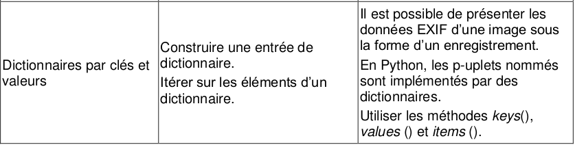

| TD n°15 : Structures de données - Les Dictionnaires | Thème 1 : Structures de données |
|---|---|
| COURS et EXERCICES |

Introduction : nécessité d'un dictionnaire⚓︎
Prenons l'exemple d'un répertoire téléhonique. Nous pouvons le mémoriser simplement comme un tableau (ou liste) de tableaux [nom,numéro]
liste_tel = [["Paul", '0650523454'],
["Emile", '0684515345'],
["Victor", '0651355186'],
["Rose", '0611245678'],
["Hélène", '0774845432']]
Si nous voulons appeler Rose, nous avons deux possibilités avec un tel tableau : * soit il faut savoir que les informations la concernant sont dans le quatrième élément de la liste (ce qui ne semble pas très pratique et réaliste)
print(liste_tel[3][1]) # il faut savoir que l'index de Rose est 3
- soit nous cherchons dans le tableau en partant du premier élément de la liste jusqu'à ce que nous trouvions Rose (ce qui revient à feuilleter son répertoire) : cela nécessite d'utiliser une boucle pour parcourir le tableau.
for element in liste_tel:
if element[0] == 'Rose':
print(element[1])
Vous conviendrez que ce n'est pas pratique pour accéder à son numéro de téléphone.
De même, la modification ou l'ajout d'un information nécessiterait de devoir feuilleter tout le répertoire. Il semblerait plus pratique d'associer un nom à un numéro, autrement dit d'associer à une information à une clé.
C'est ce que les dictionnaires permettent !
Les dictionnaires en Python⚓︎
Définitions et premiers exemples⚓︎
💜 Un dictionnaire, de type dict en Python, est un ensemble non ordonné de paires (clé, valeur) avec un accès très rapide à la valeur à partir de la clé.
C'est un type de conteneur comme les list et les tuple mais ce n'est pas une séquence. Au sens où les valeurs des tableaux ne sont pas indexés par des entiers.
Dans un dictionnaire, chaque élément est accessible par une clé qui n'est plus forcément un nombre, une chaine de caractère, un nombre, ou autre chose, peut être une clé.
📎 Exemple n°1 :
Reprenons la problématique de départ : un répertoire téléhonique.
Nous pouvons le mémoriser comme un dictionnaire [nom:numéro]
>>> repertoire = {"Paul": '0650523454',"Emile" : '0684515345',"Victor":'0651355186',"Rose": '0611245678',"Hélène": '0774845432'}
-
L'accès à Rose se fera par :
>>> repertoire["Rose"] '0611245678' -
On dit que
"Rose"est la clé et que '0611245678' est la valeur associée à la clé. -
Un dictionnaire est un ensemble clés / valeurs.
🖋 A vous n°1 :
Imaginons que je fasse l'inventaire de mon dressing :
| habits | quantité |
|---|---|
| pantalons | 3 |
| pulls | 4 |
| tee-shirts | 8 |
Question 1 :
Créer le dictionnaire représentant mon dressing.
Question 2 :
Donner le script permettant d'accéder au nombre de pulls présent dans mon dressing.
Définitions et propriétés d'un dictionnaire⚓︎
Définitions⚓︎
📘 Définition
Un dictionnaire est une donnée composite qui n'est pas ordonnée (à la différence des listes !)
Il fonctionne par un système de clé:valeur.
Les clés, comme les valeurs, peuvent être de types différents.
Un dictionnaire est délimité par des accolades.
Rappel :
- crochets
[ ]-> listes - parenthèses
( )-> tuples - accolades
{ }-> dictionnaires
Méthodes .keys() et .values()⚓︎
📎 Exemple n°2 :
- Pour lister les clés d'un dictionnaire :
>>> repertoire.keys() dict_keys(["Paul","Emile","Victor","Rose","Hélène"]) - Pour lister les valeurs d'un dictionnaire :
>>> repertoire.values() dict_values('0650523454','0684515345','0651355186','0611245678','0774845432')
🖋 A vous n°2 :
Question 1
- Lister les clés du dictionnaire dressing.
Question 2
Lister les valeurs du dictionnaire dressing.
Parcours d'un dictionnaire :⚓︎
Il est possible de parcourir un dictionnaire de trois manières :
- parcourir l'ensemble des clés avec la méthode
keys(); - parcourir l'ensemble des valeurs avec la méthode
values(); - parcourir l'ensemble des paires clés-valeurs avec la méthode
items().
On peut itérer sur un dictionnaire grâce à l'une de ces méthodes.
📎 Exemple n°3 : par les clés (idem tableau)
>>> for nom in repertoire:
print(repertoire[nom])
0650523454
0684515345
0651355186
0611245678
0774845432
Par cette méthode, on obtient les valeurs associées aux clés.
📎 Exemple n°4 : par les clés avec la méthode keys().
>>> for nom in repertoire.keys():
print(nom)
Paul
Emile
Victor
Rose
Hélène
Par cette méthodes, on extrait les clés.
ou
>>> for nom in repertoire.keys():
print(repertoire[nom])
0650523454
0684515345
0651355186
0611245678
0774845432
📎 Exemple n°5 : par les valeurs avec la méthode values().
>>> for numero in repertoire.values():
print(numero)
0650523454
0684515345
0651355186
0611245678
0774845432
Par cette méthodes, on extrait les valeurs présentes dans le dictionnaires.
📎 Exemple n°6 : par les clés et les valeurs avec la méthode items().
>>> for cle,valeur in repertoire.items():
print(cle,valeur)
Paul 0650523454
Emile 0684515345
Victor 0651355186
Rose 0611245678
Hélène 0774845432
Par cette méthodes, on extrait les valeurs et les clés du dictionnaires.
📎 Exemple n°7 : un dictionnaire dans un dictionnaire.
sportifs = {"Mike": {"taille": 1.75,"poids": 68}, "John": {"taille": 1.89,"poids": 93}, "Kate": {"taille": 1.67,"poids": 62}}
Pour accéder à la taille de Kate dans le dictionnaire sportifs, on utiliser :
sportifs["Kate"]["taille"]
1.67
Ajout / Modification d'un élément dans un dictionnaire⚓︎
📎 Exemple n°8 :
Pas besoin d'une méthode append(), il suffit de rajouter une paire clé : valeur
>>> repertoire["Bob"] = '0684574615'
On peut aussi modifier un dictionnaire existant.
repertoire["Rose"] = '0708484850'
>>>repertoire
{"Paul": '0650523454',"Emile" : '0684515345',"Victor":'0651355186',"Rose": '0708484850',"Hélène": '0774845432',"Bob": '0684574615'}
🖋 A vous n°8 :
Reprenons le dictionnaire dressing
Question 1
Rajouter la catégorie chemises avec une quantité de 6.
Question 2
Modifier la catégorie pantalons avec une quantité de 5.
Suppression d'une valeur⚓︎
📎 Exemple n°9 :
On utilise l'instruction del (déjà rencontrée pour les listes) pour supprimer une association clé/valeur
del repertoire["Paul"]
Exercices :⚓︎
🖋 A vous n°9 :
Créer une fonction qui permet de rajouter un nom et un numéro au repertoire précédent.
def(nom,numero,repertoire):
pass
🖋 A vous n°9 bis :
Reprenons notre dictionnaire dressing :
dressing = {"pantalons":3, "pulls":4, "tee-shirts":8}
achat(vetement,quantite) qui augmente de quantite le nombre de vétment (pantalon, pull ou tee-shirt) de mon dressing.
Remarque :
Petit problème si on essaie d'acheter un vêtement pour la 1ère fois
>>> achat("chemises",2)
---------------------------------------------------------------------------
KeyError Traceback (most recent call last)
<ipython-input-28-fd9d1ac5f62d> in <module>
----> 1 achat("chemises",2)
<ipython-input-27-feb173444189> in achat(habit)
1 def achat(vetement,quantite):
----> 2 dressing[vetement] = dressing[vetement] + quantite
KeyError: 'chemises'
Nous allons résoudre ce problème grâce à :
Test d'appartenance à un dictionnaire⚓︎
📎 Exemple n°10 :
Le mot in permet de tester l'appartenance d'une clé à un dictionnaire. Un booléen est renvoyé.
>>> "Jean" in repertoire
False
>>> "Jean" in repertoire.keys()
False
>>> "Rose" in repertoire.keys()
True
>>> '0684515345' in repertoire.values()
True
🖋 A vous n°10 :
Améliorer la fonction achat(vetement,quantite) en y incluant un test pour prendre en compte les nouveaux habits.
Création d'un dictionnaire⚓︎
Plusieurs méthodes permettent de créer soit un dictionnaire vide, soit de le noter en extension, soit par compréhension.
📎 Exemple n°11 :
d1 = {} # Création d'un dictionnaire vide
d2 = dict() # Création d'un dictionnaire vide (autre méthode)
d3 = {'poires': 5, 'bananes': 7, 'abricots' : 12} # création d'un dictionnaire par extension
d4 = {k: k**2 for k in range(1, 10)} # création d'un dictionnaire par compréhension
print(d4)
{1: 1, 2: 4, 3: 9, 4: 16, 5: 25, 6: 36, 7: 49, 8: 64, 9: 81}
Il est même possible de créer un dictionnaire à partir d'une liste de couples.
liste = [('cle1','valeur1'),('cle2','valeur2')]
d5 = dict(liste)
liste_tel = [["Paul", 5234], ["Emile", 5345], ["Victor", 5186], ["Rose", 5678], ["Hélène", 5432]]
d6 = dict(liste_tel)
print("d5 =>", d5)
print("d6 =>", d6)
💜 Important : Vous aurez noté que les dictionnaires Python se représentent entre accolades {}. Les différentes paires sont séparées par des virgules et sont de la forme clé: valeur.
🖋 A vous n°11 :
Question
Créez un dictionnaire appelé notes qui contient les paires (matières, moyenne) de vos trois spécialités. Affichez ensuite ce dictionnaire.
Taille d'un dictionnaire⚓︎
💜 La fonction len renvoie la taille d'un dictionnaire.
len(dressing)
5
Les dictionnaires : EXERCICES⚓︎
Exercice 1
On reprend le dictionnaire notes.
notes={'NSI':18,'Maths':15,'PC':14}
- Affichez la moyenne de NSI.
- Modifiez votre moyenne de NSI qui a gagné 2 points. Affichez le dictionnaire.
- Ajoutez la matière
Anglaisavec sa moyenne. Affichez le dictionnaire. - Affichez la taille du dictionnaire.
- Supprimez une des trois spécialités ainsi que l'Anglais et affichez le dictionnaire.
Exercice 2
On considère le dictionnaire dressing.
- Affichez tous les vétements du dressing.
- Ecrivez un programme permettant d'obtenir l'affichage suivant.
Le dressing comporte :
3 pantalons
4 pulls
8 tee-shirts
Exercice 3
On considère le dictionnaire suivant qui contient différents fruits ainsi que leurs quantités.
fruits = {"pommes": 8, "melons": 3, "poires": 6}
- Quelle instruction permet d'accéder au nombre de melons ?
- On a acheté 16 clémentines et utilisé 4 pommes pour faire une tarte. Ecrire une fonction
ajout(fruit)permettant d'ajouter un fruit dans le dictionnairefruitsainsi qu'une fonctionmiseajourquantite(fruit,quantite).
Tester avec l'exemple donné.
Exercice 4
On dispose d’un dictionnaire associant à des noms de commerciaux d’une société le nombre de ventes
qu’ils ont réalisées. Par exemple :
ventes={"Dupont":14, "Hervy":19, "Geoffroy":15, "Layec":21}
1. Écrivez une fonction qui prend en entrée un tel dictionnaire et renvoie le nombre total de ventes
dans la société.
2. Écrivez une fonction qui prend en entrée un tel dictionnaire et renvoie le nom du vendeur ayant
réalisé le plus de ventes. Si plusieurs vendeurs sont ex-aequo sur ce critère, la fonction devra retourner
le nom de l’un d’entre eux.
3. Modifier la fonction précédente pour que :
si plusieurs vendeurs sont ex-aequo sur ce critère, la fonction devra retourner tous les noms.
ventes={"Dupont":14, "Hervy":19, "Geoffroy":15, "Layec":21,"Jean":21}
Exercice 5
Le Scrabble est un jeu de société où l'on doit former des mots avec tirage aléatoire de lettres, chaque lettre valant un certain nombre de points. Le dictionnaire scrabble contient cette association entre une lettre et son nombre de points.
scrabble = {'A': 1, 'B': 3, 'C': 3, 'D': 2, 'E': 1, 'F': 4, 'G': 2, 'H': 4, 'I': 1, 'J': 8, 'K': 10, 'L': 1, 'M': 2, 'N': 1, 'O': 1, 'P': 3, 'Q': 8, 'R': 1, 'S': 1, 'T': 1, 'U': 1, 'V': 4, 'W': 10, 'X': 10, 'Y': 10, 'Z': 10}
Ecrivez une fonction points(mot) qui renvoie le nombre de points au scrabble de mot, qui est une chaîne de caractères majuscules.
Par exemple, le mot "ARBRE" doit rapporter 7 points, le mot "XYLOPHONE" doit rapporter 32 points.
Exercice 6
Au zoo de Beauval, il y a 5 éléphants d’Asie, 17 écureuils d’Asie, 2 pandas d’Asie...
On représente cet inventaire à l’aide d’un dictionnaire, de la façon suivante :
zoo_beauval = { 'elephant': {"continent":'Asie',"nombre": 5}, 'écureuil': {"continent":'Asie',"nombre": 17}, 'panda': {"continent":'Asie', "nombre":2} ,'hippopotame': {"continent":'Afrique', "nombre":7}, 'girafe': {"continent":'Afrique', "nombre":4}}
zoo_la_fleche = { 'ours': {"continent":'Europe',"nombre": 4}, 'tigre': {"continent":'Asie', "nombre":7}, 'girafe': {"continent":'Afrique', "nombre":11}, 'hippopotame': {"continent":'Afrique', "nombre":3}}
Par exemple :
assert plus_grand_nombre(zoo_la_fleche) == 'girafe'
assert plus_grand_nombre(zoo_beauval) == 'écureuil'
2. On souhaite se doter d’une fonction nombre_total qui prend un zoo en paramètre ainsi que le nom d’un continent, et qui renvoie le nombre d’animaux originaires de ce continent dans le zoo.
Par exemple :
assert nombre_total(zoo_beauval, 'Asie') == 24
assert nombre_total(zoo_la_fleche, 'Afrique') == 14
3. On souhaite se doter d’une fonction nombre qui prend un zoo en paramètre ainsi que le nom d’un animal, et qui renvoie le nombre de représentants de cet animal dans le zoo.
Par exemple :
assert nombre(zoo_la_fleche, 'panda') == 0
assert nombre(zoo_beauval, 'panda') == 2
Exercice 7
On considère le dictionnaire suivant qui contient le nom des élèves et leur note :
dico_eleves={'Pierre':17,'Chloé':18,'Simon':11,'Titouan':7,'Raphael':16,'Diwan':6,'Ethann':8,'Clément':16,'Noa':17,'Solan':5,'Matheo':17,'Martin':10,'Valentin':11,'Zoé':7,'Antonin':18,'Sacha':9,'Emma':15,'Tidane':13,'Tristan':7,'Tifenn':20,'Soren':14,'Marjorie':15,'Maxime':7,'Liam':8,'Adrien':18,'Mathieu':16,'Lucas':8,'Louis':16,'Romane':19}
audessus(dico) qui affiche les élèves ayant au dessous de la moyenne (10).
2. Créer une fonction moyenne(dico) qui renvoie la moyenne de la classe.
3. Créer à partir du dictionnaire dico_eleves un dictionnaire dessous_moyenne qui va contenir les élèves ayant au dessous de 10 (au sens large) avec leur moyenne et un dictionnaire dessus_moyenne qui va contenir les élèves ayant en dessous (au sens strict) de l a moyenne avec leur note.
Exercice 8
Voici une citation célèbre de Gandhi :
La vie est un mystère qu'il faut vivre, et non un problème à résoudre.
Créer un dictionnaire qui associe à chaque lettre (clé) son occurrence (valeur)
* Par exemple la lettre 'a' apparait deux fois.
Par exemple dico= {'a':2, .........}
Exercice 8 : Gestion d'une bibliothèque
On considère la base de données suivante :
global Livres_BD
Livres_BD ={'Les misérables':{'Auteur':'Victor Hugo','Stock':5},'Le dernier des Mohicans':{'Auteur':'James F. Cooper','Stock':2},'Un animal doué de raison':{'Auteur':'Robert Merle','Stock':6},'Notre-dame de Paris':{'Auteur':'Victor Hugo','Stock':4},'Les comtemplations':{'Auteur':'Victor Hugo','Stock':1},'Da Vinci Code':{'Auteur':'Dan Brown','Stock':3},'Anges et démons5':{'Auteur':'Dan Brown','Stock':3}}
- Ecrire une fonction
stock(livre)permettant d'afficher le stock d'un livre ainsi que son auteur. - Ecrire une fonction
titres_base(LivresBD)qui renvoie la liste des titres des livres de la base. - Ecrire une fonction
auteurs_base(LivresBD)qui retourne l'ensemble des noms d'auteurs de cette base dans un tableau. - Ecrire une fonction
auteur(nom)qui renvoie un dictionnaire qui a pour clé le nom de l'auteur et pour clé les titres des livres de cet auteur.auteur('Victor Hugo') {'Les misérables':5,'Notre-dame de Paris':4,'Les comtemplations':1} - Ecrire une fonction
est_present(livre)qui renvoie True si le livre est présent ou False s'il n'est pas présent. - Ecrire une fonction
ajoute_base(titre,auteur,stock)qui rajoute à la base LivreBD les données nécessaires pour un nouveau livre aprés avoir vérifié qu'il ne soit pas présent dans la base. - Ecrire une fonction
ajoute_stock(livre)qui ajoute 1 au stock du livre concerné et qui affiche la nouvelle base de données. - Ecrire une fonction
enleve_stock(livre)qui soustrait 1 au stock du livre concerné et qui affiche la nouvelle base de données. - Ecrire une fonction
titres_empruntables(LivresBD)qui retourne l'ensemble des livres empruntables.
Exercice 9 : QCM de NSI
Les réponses correctes d'un QCM de NSI sont stockées dans un dictionnaire nommé reponses_valides. Les clés sont des chaînes de caractères de la forme "Q1". Les valeurs possibles sont des chaînes de caractères correspondant aux quatre réponses "a","b","c","d".
Exemple : reponses_valides = {"Q1":"c","Q2":"a","Q3":"d","Q4":"c","Q5":"b"}
Les réponses données par Alice sont stockées dans le dictionnaire reponses_Alice dont voici un exemple possible :
reponses_Alice = {"Q1":"b","Q2":"a","Q3":"d","Q5":"a"}
Lorsqu'Alice n'a pas répondu à une question, il n'y a pas de clef correspondant au nom de l'exercice.
La notation d'un QCM de NSI est la suivante : 3 points par réponse correcte, -1 point par réponse incorrecte et 0 si l'on n'a pas répondu
Compléter la fonction correction_QCM_Alice(reponses_Alice,reponses_valides) qui, à partir des dictionnaires reponses_Alice et reponses_valides passées en paramètres renvoie le nombre de points obtenus au QCM par Alice.
def correction_QCM_Alice(reponses_Alice,reponses_valides):
pass
Exercice 10 : L'application Contacts de vos smartphones
L'objectif de cette activité est de programmer deux des fonctionnalités importantes des smartphones actuels :
- Ajouter un contact au répertoire ;
- Rechercher un contact dans le répertoire.
On suppose pour simplifier que le repertoire téléphonique est mémorisé dans le smartphone sous la forme d'un dictionnaire et que chaque élément du dictionnaire est une paire (prenom, numero) où prenom est la clé et numero la valeur associée.
Etape 1 : Ajouter un contact⚓︎
On considère que le répertoire téléphonique est mémorisé dans le dictionnaire repertoire. Quelques contacts sont déjà enregistrés dans ce répertoire.
repertoire = {'David': 1010, 'Mélanie': 1111, 'Alain': 121212}
Question 1 : Ecrivez une fonction ajout_contact(repertoire) qui demande à l'utilisateur de saisir les données (prénom et numéro de téléphone) d'un contact et qui ajoute ce contact à repertoire.
Question 2 : On veut maintenant créer une fonction remplissage qui permet d'ajouter des contacts au répertoire autant de fois que l'on souhaite. Plus précisément, une fois qu'un contact a été saisi on demande à l'utilisateur s'il souhaite ajouter un autre contact. Complétez la fonction remplissage en conséquence. Vous utiliserez la fonction ajout_contact écrite à la question précédente.
def remplissage(repertoire):
encore = True
# à compléter
Etape 2 : Rechercher un contact⚓︎
On souhaite maintenant écrire une fonction numero_de(prenom, repertoire) qui renvoie le numéro de prenom si prenom est bien dans repertoire et qui renvoie un message sinon.
Question 3 : Si prenom est présent dans repertoire, quelle instruction permet d'afficher le numéro associé à prenom ?
Question 4 : Complétez la fonction numero_de(prenom, repertoire) qui renvoie le numéro de téléphone associé dans l'affirmative et un message d'erreur sinon.
def numero_de(prenom, repertoire):
'''prenom est une chaine de caractères et repertoire est un dictionnaire'''
# à compléter
Exercice 11 : Quel est le mot de 6 lettres le plus présent dans Le tour du monde en 80 jours de Jules Verne ?
Le fichier texte de l'oeuvre de Jules Verne, intitulé ltdme80j.txt, a été placé dans le dossier data du répertoire de ce notebook. Par souci de simplification, le texte ne contient aucun signe de ponctuation.
De manière générale, le site du Projet Gutenberg permet de récupérer librement le texte de plusieurs milliers d'oeuvres du domaine public : https://www.gutenberg.org.
Etape 1 : Lecture du contenu du fichier⚓︎
On peut ouvrir et mémoriser dans une variable texte le contenu du fichier texte. Pour cela, il suffit d'ouvrir le fichier puis en lire le contenu sous la forme d'une unique chaîne de caractères avec la méthode read(). On ferme ensuit le flux de lecture du fichier.
# Ouverture du fichier ('r' pour read = lecture, 'utf-8' pour l'encodage des caractères)
fichier = open("ltdme80j.txt", mode = "r", encoding = "utf-8")
# Mémorisation du texte de l'oeuvre dans une chaîne de caractères appelée texte
texte = fichier.read()
# Fermeture du flux de lecture
fichier.close()
print(texte)
Etape 2 : Conversion en un tableau de mots⚓︎
On peut ensuite convertir la chaîne texte en un tableau contenant les différents mots de l'oeuvre. Pour cela, on peut utiliser la méthode split() des chaînes de caractères.
tab = texte.split()
print(tab)
Etape 3 : Compter le nombre d'occurrences de chaque mot⚓︎
Un cas d’utilisation typique des dictionnaires consiste à compter les occurrences des éléments d’un tableau.
Considérons par exemple le tableau suivant :
['b', 'c', 'e', 'b', 'c', 'j', 'd', 'b', 'j', 'a', 'b']
occurrences(t) qui renvoie un dictionnaire avec le nombre d'occurences de chaque élément du tableau t entrée en paramètre.
Par exemple, la fonction occurences appliquée au tableau précédent
occurrences(['b', 'c', 'e', 'b', 'c', 'j', 'd', 'b', 'j', 'a', 'b'])
{'b': 4, 'a': 1, 'c': 2, 'e': 1, 'j': 2, 'd': 1}
Question 1 : Ecrivez la fonction occurrences(t) et testez-la sur un tableau de caractères.
Question 2 : Appliquez la fonction occurences à ce tableau pour récupérer un dictionnaire d du nombre d'occurences de chaque mot.
Etape 4 : Trouver le mot de 6 lettres le plus présent⚓︎
Question 3 : Ecrivez une fonction mot_6_lettres_plus_frequent(d) qui renvoie le mot de 6 lettres les plus fréquent dans l'oeuvre de Jules Verne ainsi que son nombre d'occurence. (réponse : 'heures' avec 243 occurrences)
Réponse : cela revient à effectuer une recherche de maximum sur les occurences des mots de 6 lettres. On parcourt donc toutes les clés du dictionnaire d (les clés sont les mots) et parmi les mots de 6 lettres on regarde si son nombre d'occurence est le nouveau maximum. Dans l'affirmative, ce mot devient le mot le plus fréquent (provisoire) et sa valeur dans le dictionnaire le nombre d'occurrences maximum (provisoire).
Question BONUS : Ecrire une fonction mot_plus_frequent(d, k) qui renvoie le mot de k lettres le plus présent dans le dictionnaire d. Affichez ensuite le mot le plus fréquent d'une lettre, de deux lettres, etc.
Exercice 12 : gestion de commandes
Compléter les fonction pour répondre aux docstring
global commandes
commandes={'0': {'numero': 'EMA70495', 'nom': 'Ada Lovelace', 'adresse': '64 rue Jocelyne Troccaz', 'ville': 'Tours', 'etat': 'En cours'},
'1': {'numero': 'VWD74550', 'nom': 'Dorothy Vaughan', 'adresse': '33 rue Al-Kindi', 'ville': 'Bordeaux', 'etat': 'En cours'},
'2': {'numero': 'SWK65993', 'nom': 'Gilles Kahn', 'adresse': '53 rue Ingrid Daubechies', 'ville': 'Lille', 'etat': 'En cours'},
'3': {'numero': 'NKR34542', 'nom': 'Ada Lovelace', 'adresse': '98 rue Jules César', 'ville': 'Bordeaux', 'etat': 'Livrée'},
'4': {'numero': 'GEG58414', 'nom': 'Jacques-Louis Lions', 'adresse': '84 rue Al-Kindi', 'ville': 'Rennes', 'etat': 'Retour'},
'5': {'numero': 'FZA36963', 'nom': 'Al-Khwarizmi', 'adresse': '73 rue Adi Shamir', 'ville': 'Marseille', 'etat': 'En cours'},
'6': {'numero': 'QWE58690', 'nom': 'Alonzo Church', 'adresse': '47 rue Jules César', 'ville': 'Paris', 'etat': 'Retour'},
'7': {'numero': 'NLY90647', 'nom': 'Hypatie d’Alexandrie', 'adresse': '51 rue Whitfield Diffie', 'ville': 'Bordeaux', 'etat': 'En cours'},
'8': {'numero': 'VVL26047', 'nom': 'Alonzo Church', 'adresse': '6: rue Adi Shamir', 'ville': 'Montpellier', 'etat': 'En cours'},
'9': {'numero': 'CXO07384', 'nom': 'Jacques-Louis Lions', 'adresse': '30 rue Whitfield Diffie', 'ville': 'Paris', 'etat': 'Livrée'}
}
def afficher_commande_numero(numero_commande):
'''
affiche la commande correspondant au numero
: numero : str
: return : print
'''
```python
>>>afficher_commande_numero('NLY90647')
commande :NLY90647
Nom :Hypatie d’Alexandrie
Adresse :51 rue Whitfield Diffie
Ville :Bordeaux
Etat :En cours
>>>afficher_commande_numero('NLY90687')
NLY90687: numero commande non enregistré
def recherche_par_nom(nom):
'''
recherche les commandes correspondantes au nom
: nom : str
: return : un tuple contenant les commandes
>>> print(recherche_par_nom("Ada Lovelace"))
({'numero': 'EMA70495', 'nom': 'Ada Lovelace', 'adresse': '64 rue Jocelyne Troccaz', 'ville': 'Tours', 'etat': 'En cours'},
{'numero': 'NKR34542', 'nom': 'Ada Lovelace', 'adresse': '98 rue Jules César', 'ville': 'Bordeaux', 'etat': 'Livrée'})
>>>print(recherche_par_nom("Alan Turing"))
()
'''
global commandes
def ajouter_commande(numero,nom,adresse,ville,etat):
'''
ajoute une commande
: numero,nom,adresse,ville,etat : str
: return : le dict commande modifié
global commandes '''
>>>commandes={'0': {'numero': 'EMA70495', 'nom': 'Ada Lovelace', 'adresse': '64 rue Jocelyne Troccaz', 'ville': 'Tours', 'etat': 'En cours'},'1': {'numero': 'VWD74550', 'nom': 'Dorothy Vaughan', 'adresse': '33 rue Al-Kindi', 'ville': 'Bordeaux', 'etat': 'En cours'}, '2': {'numero': 'SWK65993', 'nom': 'Gilles Kahn', 'adresse': '53 rue Ingrid Daubechies', 'ville': 'Lille', 'etat': 'En cours'},'3': {'numero': 'NKR34542', 'nom': 'Ada Lovelace', 'adresse': '98 rue Jules César', 'ville': 'Bordeaux', 'etat': 'Livrée'},'4': {'numero': 'GEG58414', 'nom': 'Jacques-Louis Lions', 'adresse': '84 rue Al-Kindi', 'ville': 'Rennes', 'etat': 'Retour'}, '5': {'numero': 'FZA36963', 'nom': 'Al-Khwarizmi', 'adresse': '73 rue Adi Shamir', 'ville': 'Marseille', 'etat': 'En cours'},'6': {'numero': 'QWE58690', 'nom': 'Alonzo Church', 'adresse': '47 rue Jules César', 'ville': 'Paris', 'etat': 'Retour'},'7': {'numero': 'NLY90647', 'nom': 'Hypatie d’Alexandrie', 'adresse': '51 rue Whitfield Diffie', 'ville': 'Bordeaux', 'etat': 'En cours'},'8': {'numero': 'VVL26047', 'nom': 'Alonzo Church', 'adresse': '6: rue Adi Shamir', 'ville': 'Montpellier', 'etat': 'En cours'},'9': {'numero': 'CXO07384', 'nom': 'Jacques-Louis Lions', 'adresse': '30 rue Whitfield Diffie', 'ville': 'Paris', 'etat': 'Livrée'}
}
>>>ajouter_commande("AZE1029","Alan Turin","314 rue d'Enigma","Londres","En cours")
>>>print(commandes)
{'0': {'numero': 'EMA70495', 'nom': 'Ada Lovelace', 'adresse': '64 rue Jocelyne Troccaz', 'ville': 'Tours', 'etat': 'En cours'},'1': {'numero': 'VWD74550', 'nom': 'Dorothy Vaughan', 'adresse': '33 rue Al-Kindi', 'ville': 'Bordeaux', 'etat': 'En cours'},'2': {'numero': 'SWK65993', 'nom': 'Gilles Kahn', 'adresse': '53 rue Ingrid Daubechies', 'ville': 'Lille', 'etat': 'En cours'},'3': {'numero': 'NKR34542', 'nom': 'Ada Lovelace', 'adresse': '98 rue Jules César', 'ville': 'Bordeaux', 'etat': 'Livrée'},'4': {'numero': 'GEG58414', 'nom': 'Jacques-Louis Lions', 'adresse': '84 rue Al-Kindi', 'ville': 'Rennes', 'etat': 'Retour'}, '5': {'numero': 'FZA36963', 'nom': 'Al-Khwarizmi', 'adresse': '73 rue Adi Shamir', 'ville': 'Marseille', 'etat': 'En cours'},'6': {'numero': 'QWE58690', 'nom': 'Alonzo Church', 'adresse': '47 rue Jules César', 'ville': 'Paris', 'etat': 'Retour'},'7': {'numero': 'NLY90647', 'nom': 'Hypatie d’Alexandrie', 'adresse': '51 rue Whitfield Diffie', 'ville': 'Bordeaux', 'etat': 'En cours'},'8': {'numero': 'VVL26047', 'nom': 'Alonzo Church', 'adresse': '6: rue Adi Shamir', 'ville': 'Montpellier', 'etat': 'En cours'},'9': {'numero': 'CXO07384', 'nom': 'Jacques-Louis Lions', 'adresse': '30 rue Whitfield Diffie', 'ville': 'Paris', 'etat': 'Livrée'}'11': {'numero': 'AZE1029', 'nom': 'Alan Turin', 'adresse': "314 rue d'Enigma", 'ville': 'Londres', 'etat': 'En cours'}
}
def supprimer_commande(numero):
'''
supprime la commande correspondant au n°
: numero : str
: return : le dict commandes
'''
>>>supprimer_commande('EMA70495')
>>>print(commandes)
{'1': {'numero': 'VWD74550', 'nom': 'Dorothy Vaughan', 'adresse': '33 rue Al-Kindi', 'ville': 'Bordeaux', 'etat': 'En cours'},
'2': {'numero': 'SWK65993', 'nom': 'Gilles Kahn', 'adresse': '53 rue Ingrid Daubechies', 'ville': 'Lille', 'etat': 'En cours'},
'3': {'numero': 'NKR34542', 'nom': 'Ada Lovelace', 'adresse': '98 rue Jules César', 'ville': 'Bordeaux', 'etat': 'Livrée'},
'4': {'numero': 'GEG58414', 'nom': 'Jacques-Louis Lions', 'adresse': '84 rue Al-Kindi', 'ville': 'Rennes', 'etat': 'Retour'},
'5': {'numero': 'FZA36963', 'nom': 'Al-Khwarizmi', 'adresse': '73 rue Adi Shamir', 'ville': 'Marseille', 'etat': 'En cours'},
'6': {'numero': 'QWE58690', 'nom': 'Alonzo Church', 'adresse': '47 rue Jules César', 'ville': 'Paris', 'etat': 'Retour'},
'7': {'numero': 'NLY90647', 'nom': 'Hypatie d’Alexandrie', 'adresse': '51 rue Whitfield Diffie', 'ville': 'Bordeaux', 'etat': 'En cours'},
'8': {'numero': 'VVL26047', 'nom': 'Alonzo Church', 'adresse': '6: rue Adi Shamir', 'ville': 'Montpellier', 'etat': 'En cours'},
'9': {'numero': 'CXO07384', 'nom': 'Jacques-Louis Lions', 'adresse': '30 rue Whitfield Diffie', 'ville': 'Paris', 'etat': 'Livrée'}}
>>> supprimer_commande('EMA70895')
numero de commande non existant
Exercice 13 : reconnaissance de la langue utilisée
Cette étude ne prendra en compte que les lettres de notre alphabet pour simplifier le problème mais peut-être généralisée.
extrait1="Si je vous ai raconté ces détails sur l’astéroïde B 612 et si je vous ai confié son numéro, c’est à cause des grandes personnes. Les grandes personnes aiment les chiffres. Quand vous leur parlez d’un nouvel ami, elles ne vous questionnent jamais sur l’essentiel. Elles ne vous disent jamais : «Quel est le son de sa voix? Quels sont les jeux qu’il préfère? Est-ce qu’il collectionne les papillons?» Elles vous demandent: «Quel âge a-t-il? Combien a-t-il de frères? Combien pèse-t-il? Combien gagne son père?» Alors seulement elles croient le connaître. Si vous dites aux grandes personnes : «J’ai vu une belle maison en briques roses, avec des géraniums aux fenêtres et des colombes sur le toit...», elles ne parviennent pas à s’imaginer cette maison. Il faut leur dire : «J’ai vu une maison de cent mille francs.» Alors elles s’écrient : «Comme c’est joli!»"
extrait2='If I have told you these details about the asteroid, and made a note of its number for you, it is on account of the grown-ups and their ways. When you tell them that you have made a new friend, they never ask you any questions about essential matters. They never say to you, “What does his voice sound like? What games does he love best? Does he collect butterflies?” Instead, they demand: “How old is he? How many brothers has he? How much does he weigh? How much money does his father make? Only from these figures do they think they have learned anything about him. If you were to say to the grown-ups: “I saw a beautiful house made of rosy brick, with geraniums in the windows and doves on the roof,” they would not be able to get any idea of that house at all. You would have to say to them: “I saw a house that cost $ 20,000.” Then they would exclaim: “Oh, what a pretty house that is!” '
Ecrire une fonction analyse_lettre(extrait) qui renvoie un dictionnaire avec le nombre d'apparition de chacune des lettres dans le texte.
Exemple :
| Lettre | Extrait1 | Extrait2 |
|---|---|---|
| A | 40 | 55 |
| B | 7 | 11 |
| C | 22 | 10 |
| D | 18 | 28 |
| e | 22 | 86 |
| ... | ... | ... |
Ecrire une fonction analyse(extrait) qui renvoie un tableau avec le nombre d'apparitions des lettres (mais unique les nombres)
Exemple :
- Pour l'extrait1 : la fonction doit renvoyer le tableau
[40,7,22,18,105,8,8,1,44,8,0,49,19,56,40,11,8,34,76,33,34,13,0,4,0,1]
Pour pouvoir faire l'analyse du texte, on va utiliser une analyse fréquentielle.
De plus on va utiliser une notion de distance, pour cela on va utiliser la librairie maths de python.
from math import *
On va également utiliser les apparition des divers lettres dans les divers pays étudiés.
LANGUES=['FR','ANG','ALL','ESP','POR','ITA']
#Effectif des lettres dans les langues respectives du tableau LANGUES
EFF=[[763,90,326,366,1471,106,86,73,752,54,4,545,296,709,537,302,136,655,794,724,631,162,11,38,30,13],
[816,149,278,425,1270,222,201,609,696,15,77,402,240,674,750,192,9,598,632,905,275,97,236,15,197,7],
[651,189,306,508,1740,166,301,476,755,27,121,344,253,978,251,79,2,700,727,615,435,67,189,3,4,113],
[1253,142,468,586,1368,69,101,70,625,44,1,497,315,671,868,251,88,687,798,463,393,90,2,22,90,52],
[1463,104,388,499,1257,102,130,128,618,40,2,278,474,505,1073,252,120,653,781,474,463,167,1,21,1,47],
[1174,92,450,373,1179,95,164,154,1128,0,0,651,251,688,983,305,51,637,498,562,301,210,0,0,0,49]
]
On utilisera la fonction suivante :
def distance(liste1,liste2):
s1=sum(liste1) #somme des elements de la premiere liste
s2=sum(liste2) #somme des éléments de la seconde liste.
dist=0
#on va calculer la somme des carré des différences des fréquences pour chaque lettre
for i in range(26):
dist+=(liste1[i]/s1-liste2[i]/s2)**2 #liste1[i]/s1 correspond à la fréquence de l'élément à la position i dans la liste
return sqrt(dist) #pour avoir la distance, il faut maintenant prendre la racine de ce nombre dist
Un exemple : comparaison de deux tableaux
Liste1=[40,7,22,18,105,8,8,1,44,8,0,49,19,56,40,11,8,34,76,33,34,13,0,4,0,1]
Liste2=[763,90,326,366,1471,106,86,73,752,54,4,545,296,709,537,302,136,655,794,724,631,162,11,38,30,13]
distance(Liste1,Liste2)
0.06197049246150164
Maintenant calcuer la distance entre le tableau extrait d'un texte (ici extrait1 et extrait2) avec le tableau correspondant à chacune des langues présentes dans le tableau LANGUES.
Pour cela créer une fonction langue(extrait) qui calcule la distance entre chaque langue et l'extrait testé.
def langue(extrait):
e=analyse(extrait)
numero_langue=0 #au initialise à 0 ce qui correspond au français
for tab in EFF: # cette méthode permet de parcourir le tableau EFF
pass
Compléter la fonction afin d'obtenir le résultat suivant avec l'extrait 1
print(langue(extrait1)
FR 0.061940492..... #distance la plus faible donc la langue est le français.
ANG 0.119750.....
ALL 0.10130....
ESP 0.0999...
POR 0.13131....
ITA 0.12394...
#Test avec de l'espagnol
extrait3='Si les he contado estos detalles sobre el asteroide B 612 y si les revelé su número, es a causa de los adultos. A los adultos les gustan los números. Cuando uno les habla de un nuevo amigo, nunca preguntan sobre lo esencial. Nunca te dicen: "Cómo es el sonido de su voz ? Cuáles son los juegos que prefiere ? Colecciona mariposas ?" Te preguntan: "Qué edad tiene ? Cuántos hermanos tiene ? Cuánto pesa ? Cuánto gana su padre ?" Sólo entonces creen conocerlo. Si uno dice a los adultos: "Vi una bella casa de ladrillos rosas, con geranios en las ventanas y palomas en el techo..." no logran imaginársela. Hay que decirles: "Vi una casa de cien mil francos." Entonces exclaman: "Qué lindo !"'
#Texte en italien
extrait4='''Be , loro alzeranno le spalle, e vi tratteranno come un bambino. Ma se voi invece gli dite: "Il pianeta da dove veniva e l'asteroide B 612" allora ne sono subito convinti e vi lasciano in pace con le domande. Sono fatti cosi. Non c'e da prendersela. I bambini devono essere indulgenti coi grandi.
Ma certo, noi che comprendiamo la vita, noi ce ne infischiamo dei numeri! Mi sarebbe piaciuto cominciare questo racconto come una storia di fate. Mi sarebbe piaciuto dire:
"C'era una volta un piccolo principe che viveva su di un pineta poco piu grande di lui e aveva bisogno di un amico…"'''
#Test avec un texte en allemand
extrait5="Wenn ich euch dieses nebensächliche Drum und Dran über den Planeten B 612 erzähle und euch sogar seine Nummer anvertraue, so geschieht das der großen Leute wegen. Die großen Leute haben eine Vorliebe für Zahlen. Wenn ihr ihnen von einem neuen Freund erzählt, befragen sie euch nie über das Wesentliche. Sie fragen euch nie: Wie ist der Klang seiner Stimme? Welche Spiele liebt er am meisten? Sammelt er Schmetterlinge? Sie fragen euch: Wie alt ist er? Wieviele Brüder hat er? Wieviel wiegt er? Wieviel verdient sein Vater? Dann erst glauben sie, ihn zu kennen. Wenn ihr zu den großen Leute sagt:"
Faire de même avec chacun des extraits